Mark I – Homem de Ferro
A primeira armadura que Tony Stark construiu no UCM é uma questão de vida ou morte. Ao invés de construir um míssil dentro de uma caverna no meio do deserto, Tony e Ho Yinsen (Shaun Tob) secretamente constroem uma armadura com poucos recursos e algumas peças que encontraram no local em que estavam sendo feitos reféns. Eles constroem uma armadura com dois lança-chamas na palma de cada mão, um lançador de foguetes, e botas de pressão. Dadas as limitações de materiais, a armadura é à prova de balas, porém seu design apressado deixou alguns lugares vulneráveis como os olhos. Apesar de ter sido feita às pressas e sem muito planejamento foi ela quem serviu de inspiração pra que Tony se tornasse o Homem de Ferro.
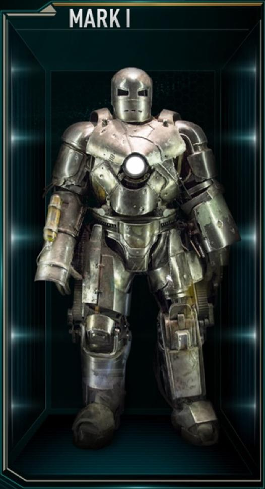Mark II – Homem de Ferro
Após sobreviver no Afeganistão, Tony Stark retorna para sua casa com uma nova meta. Ele se compromete a construir uma versão melhorada de sua primeira armadura. Tony desenvolve um repulsor de tecnologia e então cria o design da armadura. A Mark II é a primeira armadura a entregar a JARVIS (Paul Bettany) Sua maior fraqueza é a inabilidade de chegar a altas altitudes sem congelar, uma fraqueza que Tony usou para derrotar Stane. Essa foi a primeira armadura usada por James Rhodes (Don Cheadle) antes de se tornar Máquina de Combate.
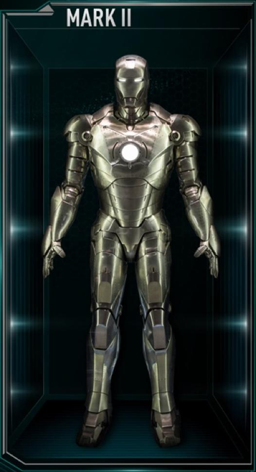Mark III – Homem de Ferro
A Mark III simboliza a consolidação do Homem de Ferro como um super-herói. A mudança mais evidente é a clássica pintura vermelha e dourada, inspirada em de seus carros de luxo. Essa é também a primeira armadura que foi feita especialmente para aguentar a batalha, incorporar um grande arsenal de armas e misseis, e as armas em miniatura que ficam nos ombros. A armadura feita de titânio concertou o problema do congelamento e aumentou sua força e mobilidade.
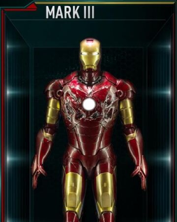Mark IV – Homem de Ferro 2
Depois da Mark III ter sido danificada na batalha final contra Obadiah Stane. Tony constrói a Mark IV para substituir sua antecessora. Nesse momento, seu ego voltou e ele decidi usar a armadura como um símbolo de luxuria. Por esse motivo, não foram feitas muitas mudanças além do aumento da mobilidade, uma pintura vermelha mais brilhante e uma dispensa para dejetos biológicos que permite fazer suas necessidades sem precisar ir até o banheiro.
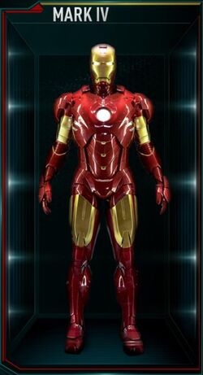Mark V – Homem de Ferro 2
O diferencial da Mark V é que ela foca mais na acessibilidade que na força e resistência. Esse modelo tem esse nome pois possuí a habilidade de se transformar em uma mala. Essa armadura é composta por várias peças pequenas que possibilitam uma maior mobilidade. Apesar de salvar Tony do ataque de Whiplash a armadura fica extremamente danificada com apenas alguns ataques.
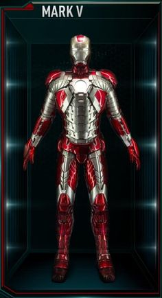Mark VI – Homem de Ferro 2 e Os Vingadores
Quando o reator no peito de Tony o envenena, ele cria uma versão mais poderosa – e uma armadura para combinar. Isso da à ele mais energia e permite que tenha mais mobilidade, mais armas e mais proteção. A armadura conta ainda com um laser poderoso, mini misseis, e uma resistência a eletricidade – isso se torna evidente nas lutas contra Whiplash e Thor (Chris Hemsworht) – e a habilidade de lutar em baixo da água.
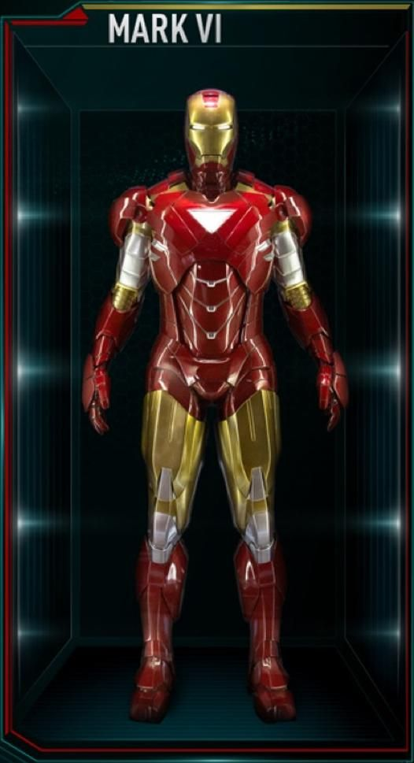Mark VII – Os Vingadores
Esse modelo tem a forma de um foguete que se juntam em torno do Tony tornando a vestimenta da armadura mais simplificada. O reator circular está de volta nessa versão e todo o arsenal de armas e mais mísseis, laser recarregáveis. A Mark VII consegue aguentar altos danos na batalha, mas não consegue chegar ao espaço sem falhar.
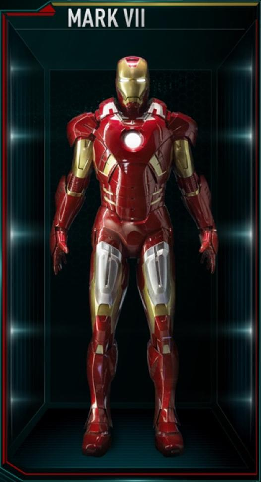Mark XLII – Homem de Ferro 3
Esse modelo tem a forma de um foguete que se juntam em torno do Tony tornando a vestimenta da armadura mais simplificada. O reator circular está de volta nessa versão e todo o arsenal de armas e mais mísseis, laser recarregáveis. A Mark VII consegue aguentar altos danos na batalha, mas não consegue chegar ao espaço sem falhar.
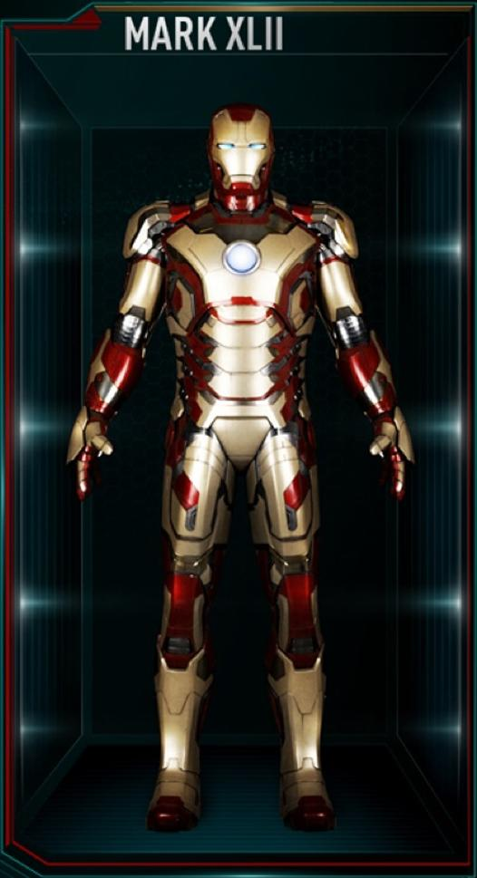A Legião das Armaduras de Ferro – Homem de Ferro 3
Mark XXXIII “Silver Centurion”
Baseado nas histórias em quadrinhos, a Silver Centurion tem uma lâmina em cada braço que estão conectados ao sistema de energia. Essa é a primeira armadura que Tony usa após chamar a legião para batalhar contra Aldrich Killian (Guy Pearce) e a primeira a ser destruída por ele.
Mark XVI “Nightclub”
Esse modelo tem um sistema eletrônico de camuflagem. É a segunda armadura que ele usa contra Killian. A Mark V Nightclub também sacrifica força, poder de fogo, e durabilidade em troca da mobilidade.
Mark XL “Shotgun”
Com a habilidade de alcançar altas velocidades, essa é a armadura mais rápida que Tony Stark criou. É a armadura escolhida para lutar contra Killian após a suposta morte de Pepper Potts (Gwyneth Paltrow). Esse modelo possui um poderoso estabilizador em suas costas que permite maior estabilidade enquanto voa.
Mark XV “Sneaky”
Essa é a primeira armadura pensada em sua discrição, é também a ultima usada no combate. Seu design áspero e os ângulos afiados em algumas partes da armadura.
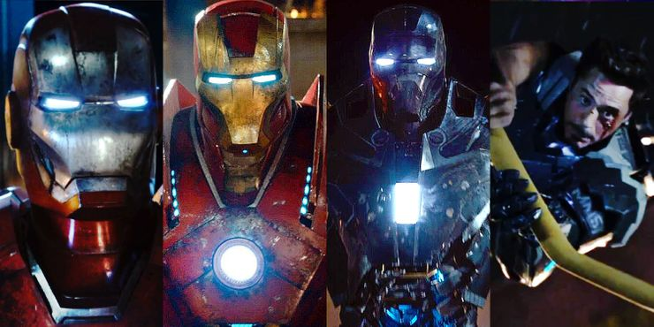Mark XLIII – Os Vingadores: A Era de Ultron
Tony Stark prometeu não continuar produzindo suas armadura por conta dos protocolos apresentados em Homem de Ferro 3. No entanto, a Mark XLIII provou o contrário. Esse modelo tem as melhores características da Mark VII e Mark XLII, mesclando a versatilidade de uma com a duração da outra.
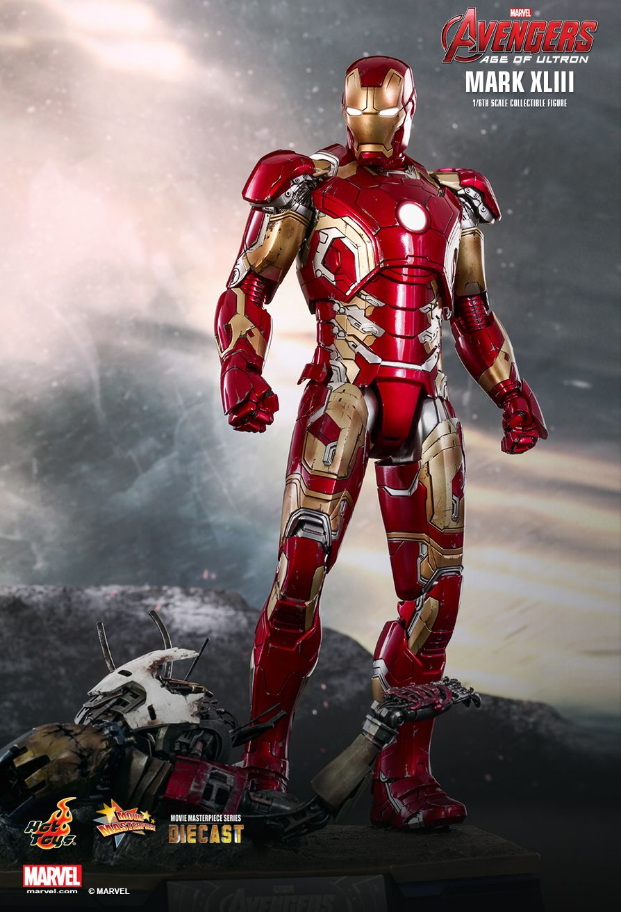Mark XLIV – Os Vingadores: A Era de Ultron
A hulkbuster finalmente aparece em Os Vingadores: A Era de Ultron. Tony constrói a armadura em parceria com Bruce Banner (Mark Ruffalo) como um plano de contingencia caso Banner perdesse controle do Hulk. Todas as armas são customizadas para poderem conter Hulk, com sedativos, mãos de britadeira e peças reservas para poder ajuda-lo.
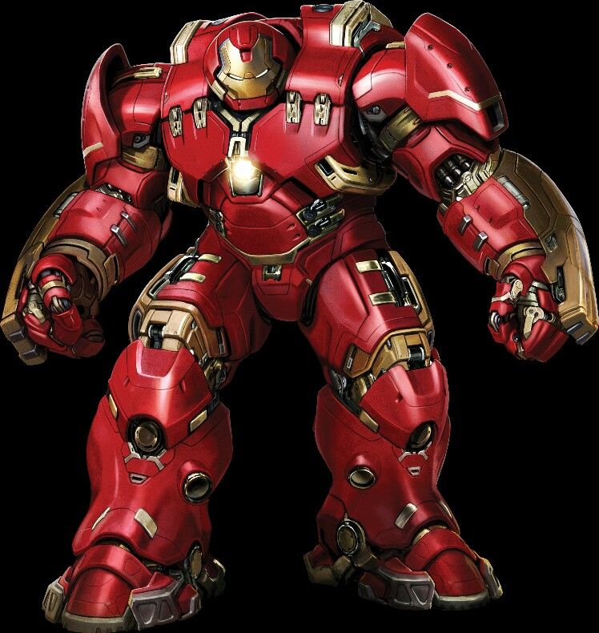Mark XLV – Os Vingadores: A Era de Ultron
Esse modelo carrega todos os adereços da Mark XLIII e sua armadura é reforçada com titânio dourado tornando-a mais resistente e brilhante. A maior diferença no design dessa armadura é a forma hexagonal em volto de seu reator. Desde que JARVIS foi usado por Ultron (James Spader) para criar Visão, esse é o primeiro traje do Homem de Ferro a usar seu substituto, FRIDAY (Jennifer Connelly).
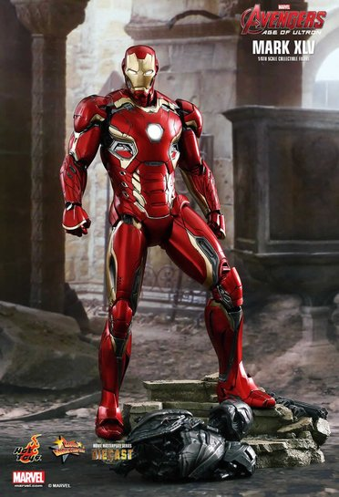Mark XLVI – Capitão América: Guerra Civil
A armadura que Tony Stark usou para lutar contra o Capitão América (Chris Evans) e Bucky Barnes (Sebastian Stan) foi a primeira armadura inspirada pela Bleeding Edge da era dos quadrinhos. A miniatura do reator se espalha por toda parte dando mais poder e ajudando Tony a manipula-la com mais facilidade.
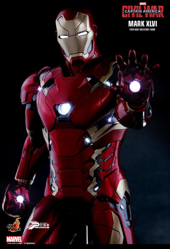Mark XLVII – Homem-Aranha: De Volta Ao Lar
A Mark XLVII usada no filme Homem-Aranha: De volta ao Lar também foi inspirada nas histórias em quadrinhos da Marvel. O design, no entanto, é o mesmo usado na Mark XLVI, e sua maior melhoria é a utilização do Wi-Fi na comunicação sem a necessidade de usar um headset.
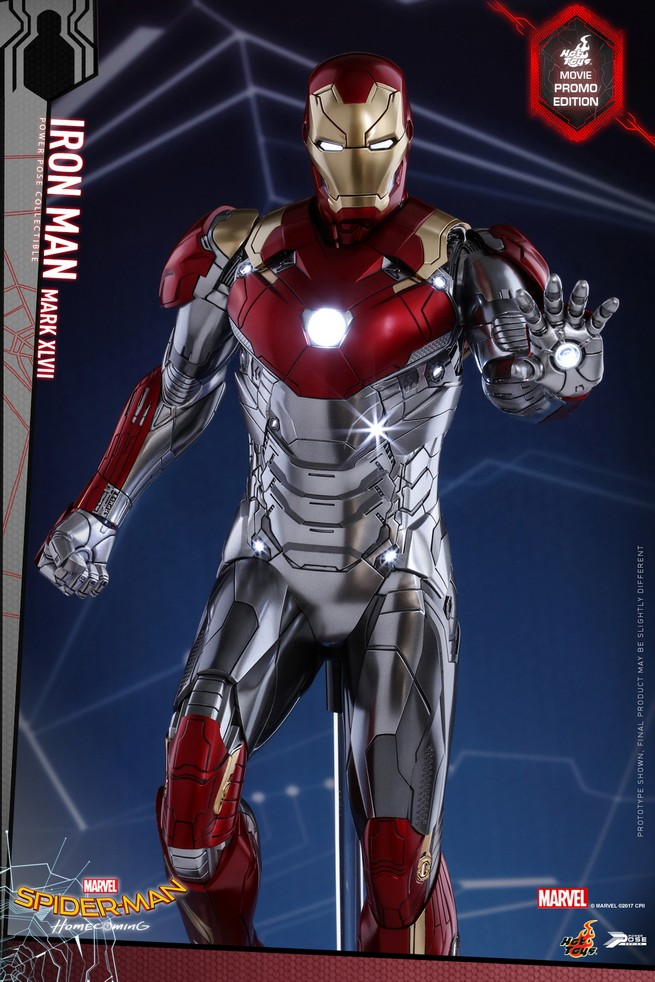Mark L – Os Vingadores: Guerra Infinita
A penúltima armadura usada por Tony é baseada em nanotecnologia, seus recursos são quase infinitos e só dependem da criatividade de Tony. Ela pode se materializar e se reformular em questão de segundos, criando uma grande variação de misseis, canhões, laminas, escudos, asas, spray congelante. O design é inspirado na própria figura do corpo de Tony. Essa armadura também tem a habilidade de voar até o espaço sem causar nenhum estrago.
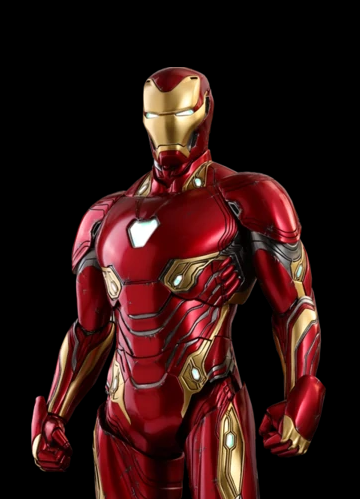Mark LXXXV – Os Vingadores: Ultimato
Tony Stark passou os 5 anos após Thanos (Josh Brolin) estragar sua última armadura, criando a Mark LXXXV. Perfeitamente inspirada na clássica armadura criada por Steve Ditko, a última armadura de Tony mistura o formato da Mark L e sua nanotecnologia com a um design mais muscular. Essa armadura é combinação perfeita de todas as anteriores e também possibilitou Tony a lutar contra Thanos e utilizar o poder das seis joias do infinito. Foi com esse traje do Homem de Ferro que Robert Downey Jr. se aposentou do MCU.
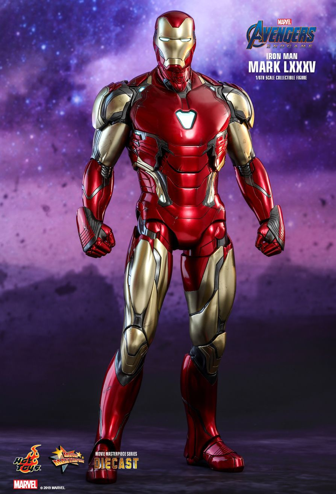